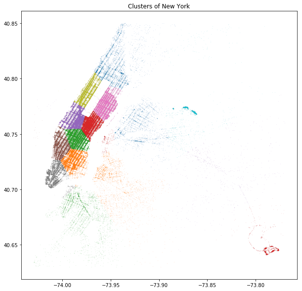

Where Should Taxi Go
TDI Project Proposal
Wenyu Wang  PhD @ Purdue with
PhD @ Purdue with  Data Science
Data Science
Background
- 2016 NYC data published by TLC
- ~ 20GB available at Google BigQuery
- 15 Features on Time, Location, and Fares
Motivation
-
Taxis are not full-pack all the time. Check here
-
Idle taxis:
 efficiency,
efficiency,  Traffic-Jam
Traffic-Jam -
Problem: where should taxi go after a drop?
-
Solution: given any position & time, suggest where an empty cab to go?
Overview

Cluster

Transition

In-Vs-Out

Next
- Finer grid
- Seasonal effect
- Online recommendations (Uber & Lyft)